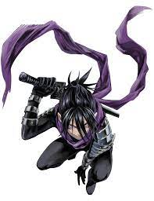
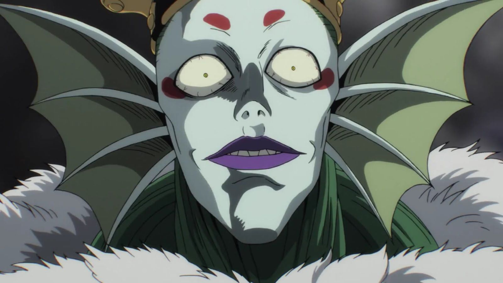
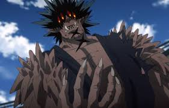
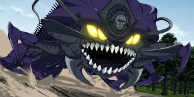

As fast as the speed of the sound he is a recurring villain and occasional anti-hero. Sonic is also a self-declared eternal rival of Saitama.
The Deep Sea King was a sadistic individual who enjoyed starting fights and inflicting pain upon others. He was determined to take the earth's surface for himself to rule. He regarded people as little more than food.
Ultimate martial artist Gouketsu was exceptionally calm, composed, and calculating, similar to a human. However, he also showcased the trademark cruelty and arrogance of a monster.Gouketsu is an executive member of the Monster Association. He was strong enough to win the first Super Fight as a human; and effortlessly defeated an S-Class hero
Unstoppable insect a gargantuan centipede creature. In the center of his head was an old, wrinkled, humanoid face. Elder Centipede's appearance
The Hero Hunter is a major adversary of the Hero Association and Monster Association. He is a former disciple of Bang but was expelled from his dojo for going on a rampage. Sitch of the Hero Association views him as a grave threat to the organization despite being only a human.